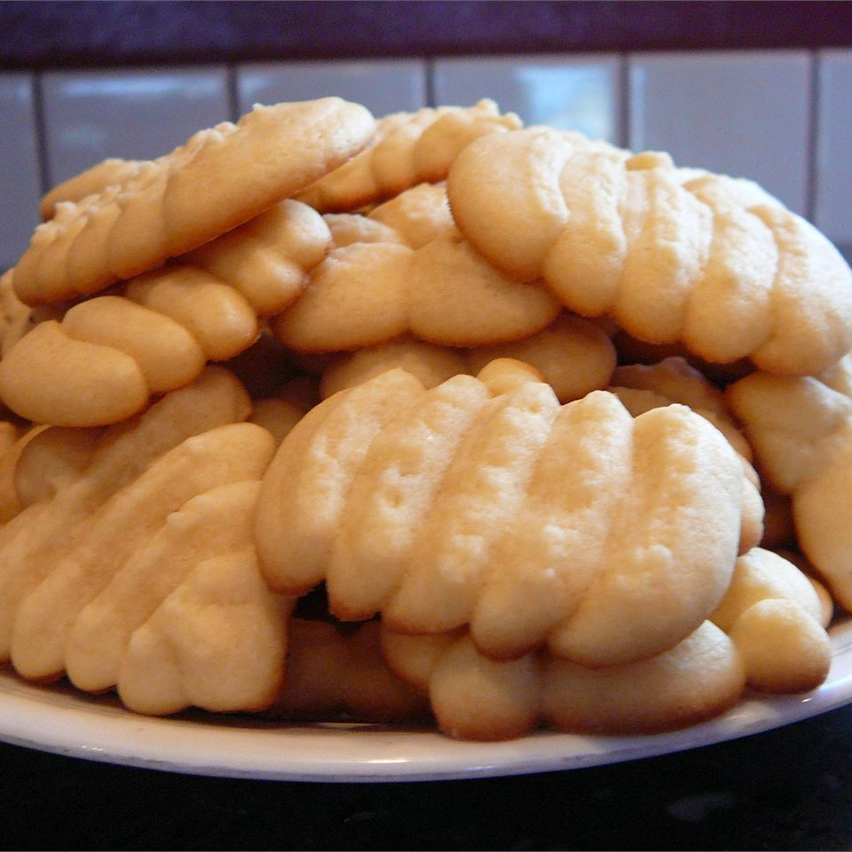

Butter Cookies

Description
This simple butter cookies recipe can be used in a cookie press, made as a drop cookie, or shaped into a roll and sliced. There is no special cookie recipe for a cookie press - any stiff butter type of cookie can be used! Just be sure to chill it thoroughly so it keeps its shape while baking.
Ingredients
- 1 cup butter
- 1 cup white sugar
- 1 egg
- 2 teaspoons vanilla extract
- 2 2/3 cups all-purpose flower
- 1/4 teaspoon salt
Directions
- Beat butter and sugar together in a large bowl with an electric mixer until light and fluffy. Beat in egg, then stir in vanilla. COmbine flour and salt in a separate bowl; add to butter mixture and mix to form a dough. Cover dough with plastic wrap and chill for at least one hour.
- Preheat oven to 400 degrees F (200 degrees C). Chill two cookie sheets.
- Transfer chilled dough to a cookie press; press out onto chilled cookie sheets.
- Bake in the preheated oven until lightly golden at the edges, about 8 to 10 minutes. Transfer cookies to wire racks to cool.